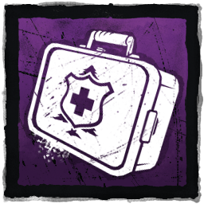
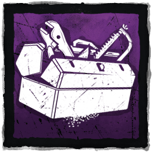
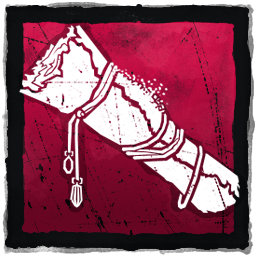
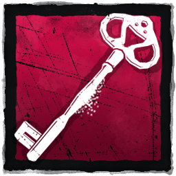
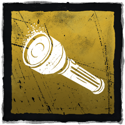

The basics
On the survivors side, there are 4 of you. You all must work together to get generators done and escape the trial without being harmed.
The objective
The sole objective of the survivors is to complete generators. They are scatered around the map and you must fix them in order to power the exit gates. There are also side objectives like cleansing totems and opening chest.
Items
There are items in the game that can help the surviors in many ways. Keep in mind that these items have charges to them so they are not unlimited usage. These items are...
- Medkit - can heal other survivors or yourself
- Toolbox - To speed up the repair of generators and sabotage hooks.
- Maps - To find objectives around the map.
- Keys - Used to open the hatch found when the exit gates are powered.
- Flashlights - Used to blind the hunter
- Add-ons - There are alot of them. The add-ons can boost the items in their own way. All of the items and add ons can be obtained from the bloodweb or chest. List of every add-on in the game